한국사능력검정시험-기본 (2022-02-12 기출문제)
1. 다음 축제에서 체험할 수 있는 활동으로 적절한 것은? [1점]
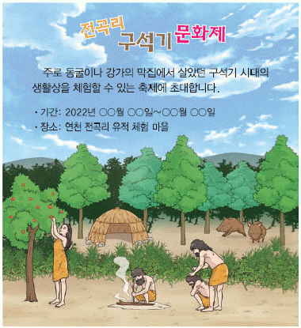
- 가락바퀴로 실 뽑기
- 뗀석기로 고기 자르기
- 점토로 빗살무늬 토기 빚기
- 거푸집으로 청동검 모형 만들기
(정답률: 84%)

2. (가)에 들어갈 내용으로 옳은 것은? [2점]
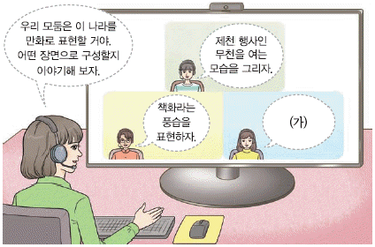
- 서옥제라는 혼인 풍습을 표현해 보자.
- 무예를 익히는 화랑도의 모습을 보여주자.
- 특산물인 단궁, 과하마, 반어피를 그려 보자.
- 지배층인 마가, 우가, 저가, 구가를 등장시키자.
(정답률: 72%)
3. 다음 자료에 해당하는 나라에 대한 설명으로 옳은 것은? [2점]
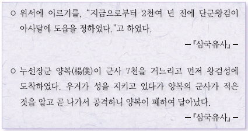
- 신성 지역인 소도가 있었다.
- 낙랑, 왜 등에 철을 수출하였다.
- 화백 회의에서 중요한 일을 결정하였다.
- 사회 질서를 유지하기 위해 범금 8조를 만들었다.
(정답률: 75%)
4. (가) 왕에 대한 설명으로 옳은 것은? [2점]
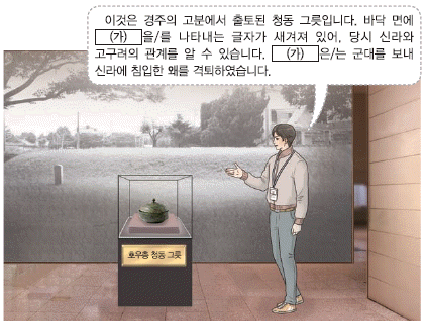
- 태학을 설립하였다.
- 낙랑군을 몰아내었다.
- 천리장성을 축조하였다.
- 영락이라는 연호를 사용하였다.
(정답률: 74%)
5. (가), (나) 사이의 시기에 있었던 사실로 옳은 것은? [3점]
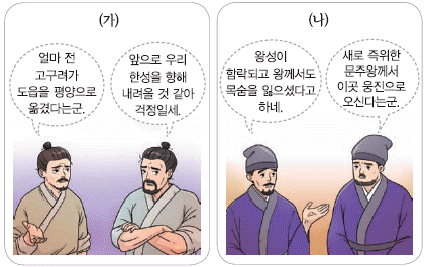
- 고구려가 옥저를 정복하였다.
- 백제가 신라와 동맹을 맺었다.
- 백제가 관산성 전투에서 패배하였다.
- 고구려가 안시성에서 당군을 물리쳤다.
(정답률: 54%)
6. 밑줄 그은 '그'로 옳은 것은? [1점]
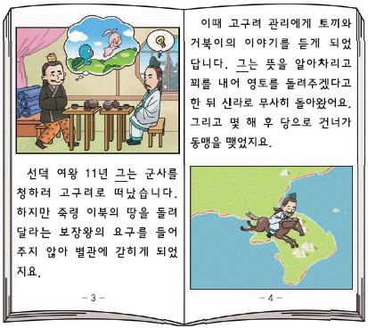
- 김대성
- 김춘추
- 사다함
- 이사부
(정답률: 75%)
7. (가) 국가에 대한 설명으로 옳은 것은? [3점]
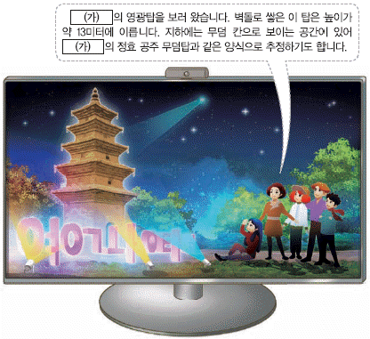
- 송악에서 철원으로 도읍을 옮겼다.
- 수의 군대를 살수에서 크게 무찔렀다.
- 인재 선발을 위하여 독서삼품과를 시행하였다.
- 정당성 아래 6부를 두어 행정을 담당하게 하였다.
(정답률: 59%)
8. 다음 일기의 소재가 된 유적으로 옳은 것은? [2점]
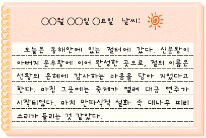
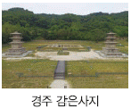
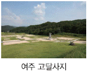
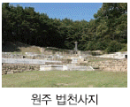
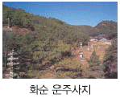
(정답률: 72%)
9. 다음 답사가 이루어진 지역으로 옳지 않은 것은? [2점]
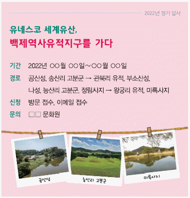
- 공주
- 부여
- 익산
- 전주
(정답률: 40%)
10. 밑줄 그은 '그'가 활동한 시기에 볼 수 있는 모습으로 적절한 것은? [2점]
- 성리학을 공부하는 유생
- 금속 활자를 주조하는 장인
- 판소리 공연을 하는 소리꾼
- 군사를 모아 장군이라 칭하는 호족
(정답률: 51%)
11. (가) 왕에 대한 설명으로 옳은 것은? [2점]
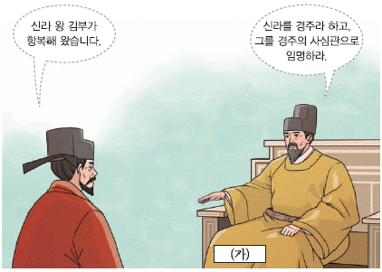
- 훈요 10조를 남겼다.
- 과거제를 시행하였다.
- 만권당을 설립하였다.
- 전시과를 마련하였다.
(정답률: 58%)
12. (가)~(다) 학생이 발표한 내용을 일어난 순대로 옳게 나열한 것은? [3점]
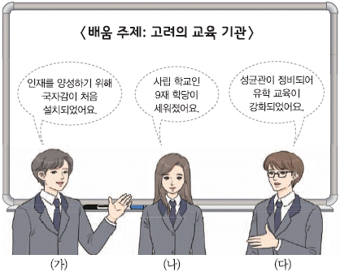
- (가) - (나) - (다)
- (가) - (다) - (나)
- (나) - (가) - (다)
- (다) - (가) - (나)
(정답률: 52%)
13. 교사의 질문에 대한 학생의 답변으로 옳지 않은 것은? [2점]
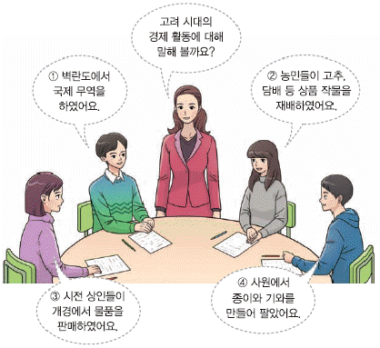
- ①
- ②
- ③
- ④
(정답률: 54%)
14. (가)에 들어갈 세시 풍속으로 옳은 것은? [1점]
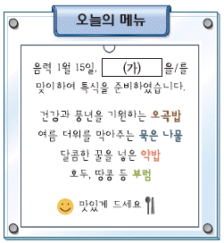
- 동지
- 추석
- 삼짇날
- 정월 대보름
(정답률: 68%)
15. (가) 시기에 있었던 사실로 옳은 것은? [3점]
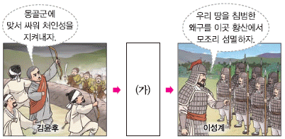
- 과전법이 시행되었다.
- 이자겸이 난을 일으켰다.
- 궁예가 후고구려를 세웠다.
- 팔만대장경판이 제작되었다.
(정답률: 54%)
16. 다음 퀴즈의 정답으로 옳은 것은? [1점]
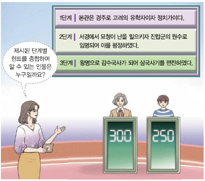
- 양규
- 일연
- 김부식
- 이제현
(정답률: 70%)
17. 다음 다큐멘터리에서 볼 수 있는 장면으로 적절하지 않은 것은? [2점]
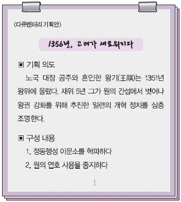
- 수원 화성을 축조하는 백성
- 쌍성총관부를 공격하는 군인
- 숙청당하는 기철 등 친원 세력
- 정방 폐지 교서를 작성하는 관리
(정답률: 53%)
18. 다음 기사에 보도된 문화유산으로 옳은 것은? [2점]
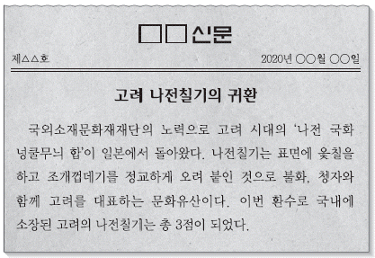
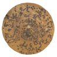
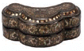
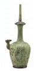
(정답률: 59%)
19. (가) 인물의 활동으로 옳은 것은? [2점]
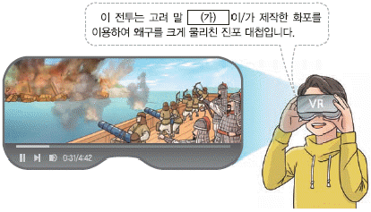
- 거중기를 설계하였다.
- 양부일구를 제작하였다.
- 비격진천뢰를 발명하였다.
- 화통도감 설치를 건의하였다.
(정답률: 67%)
20. 밑줄 그은 '탑'으로 옳은 것은? [2점]
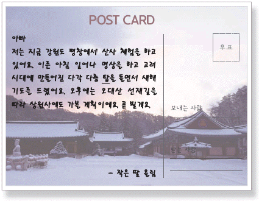
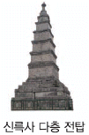
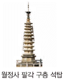
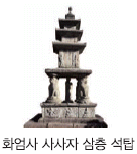
(정답률: 53%)
21. (가)에 들어갈 사건으로 옳은 것은? [2점]
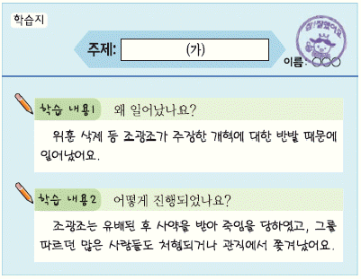
- 기묘사화
- 신유박해
- 인조반정
- 임오군란
(정답률: 63%)
22. (가)에 들어갈 인물로 옳은 것은? [1점]
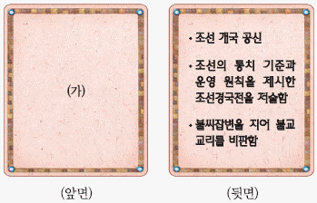
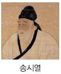
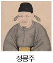
(정답률: 64%)
23. 밑줄 그은 '왕'이 추진한 정책으로 옳은 것은? [2점]
- 삼별초를 조직하였다.
- 직전법을 시행하였다.
- 한양으로 천도하였다.
- 훈민정음을 창제하였다.
(정답률: 67%)
24. (가)에 들어갈 정치 기구로 옳은 것은? [2점]
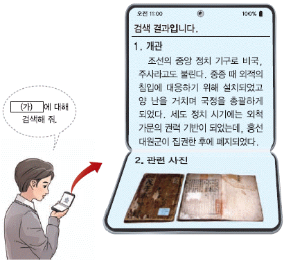
- 비변사
- 어사대
- 도병마사
- 군국기무처
(정답률: 58%)
25. (가) 전쟁 중에 있었던 사실로 옳은 것은? [2점]
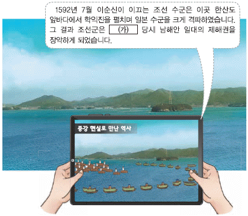
- 최윤덕이 4군을 개척하였다.
- 서희가 강동 6주를 확보하였다.
- 권율이 행주산성에서 승리하였다.
- 이종무가 쓰시마섬을 토벌하였다.
(정답률: 69%)
26. 다음 학생이 생각하고 있는 책으로 옳은 것은? [1점]
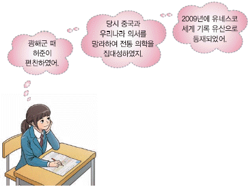
- 동의보감
- 목민심서
- 열하일기
- 향약집성방
(정답률: 74%)
27. 다음 퀴즈의 정답으로 옳은 것은? [2점]
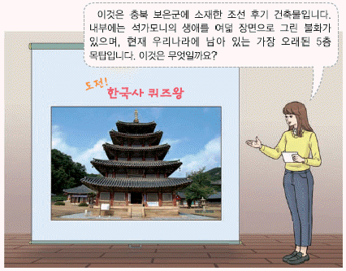
(정답률: 40%)
28. (가)에 대한 역대 왕조의 시기별 정책으로 옳은 것은? [3점]
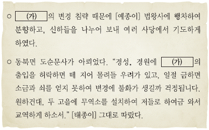
- 백제 의자왕 때 대야성을 공격하였다.
- 신라 흥덕왕 때 완도에 청해진을 설치하였다.
- 고려 숙종 때 윤관의 건의로 별무반을 편성하였다.
- 조선 고종 때 종로와 전국 가지에 척화비를 건립하였다.
(정답률: 40%)
29. 다음 가상 뉴스가 보도된 시기의 경제 상황으로 옳은 것은? [2점]
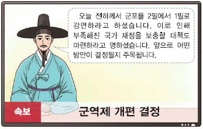
- 당백전이 유통되었다.
- 동시전이 설치되었다.
- 목화가 처음 전래되었다.
- 모내기법이 전국으로 확산되었다.
(정답률: 46%)
30. (가) 왕이 추진한 정책으로 옳은 것은? [3점]
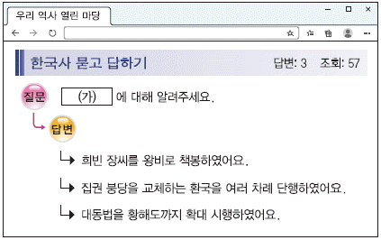
- 장용영을 설치하였다.
- 탕평비를 건립하였다.
- 상평통보를 발행하였다.
- 동국여지승람을 편찬하였다.
(정답률: 44%)
31. 밑줄 그은 '변고'가 일어난 시기를 연표에서 옳게 고른 것은? [3점]
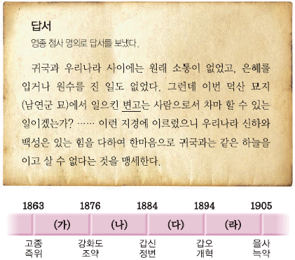
- (가)
- (나)
- (다)
- (라)
(정답률: 45%)
32. 다음 책이 국내에 유포된 영향으로 적절한 것은? [2점]
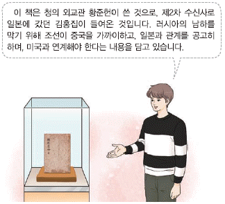
- 병인박해가 일어났다.
- 제너럴 셔먼호 사건이 발생하였다.
- 이만손 등이 영남 만인소를 울렸다.
- 어재연 부대가 광성보에서 항전하였다.
(정답률: 44%)
33. (가) 운동에 대한 탐구 활동으로 가장 적절한 것은? [2점]
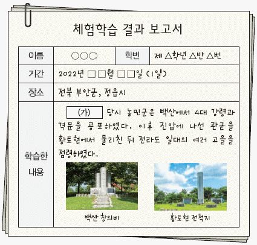
- 삼전도비의 건립 배경을 조사한다.
- 산미 증식 계획의 실상을 파악한다.
- 나선 정벌군의 이동 경로를 알아본다.
- 전주 화약이 체결되는 과정을 살펴본다.
(정답률: 52%)
34. 다음 사건 이후에 일어난 사실로 옳은 것은? [2점]
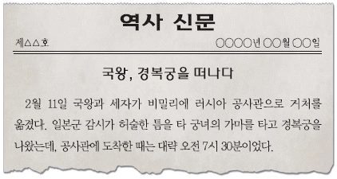
- 훈련도감이 설치되었다.
- 청에 영선사가 파견되었다.
- 외규장각 도서가 약탈되었다.
- 대한 제국 수립이 선포되었다.
(정답률: 52%)
35. 밑줄 그은 '이 단체'로 옳은 것은? [1점]
- 근우회
- 찬양회
- 조선 여자 교육회
- 토산 애용 부인회
(정답률: 51%)
36. 다음 자료에 해당하는 인물로 옳은 것은? [2점]
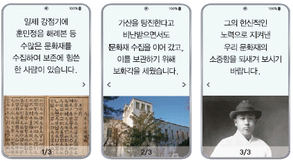
- 심훈
- 이회영
- 전형필
- 주시경
(정답률: 26%)
37. (가)의 활동으로 옳은 것은? [2점]
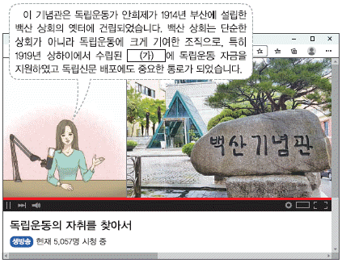
- 구미 위원부를 설치하였다.
- 만민 공동회를 개최하였다.
- 국채 보상 운동을 전개하였다.
- 신흥 무관 학교를 설립하였다.
(정답률: 31%)
38. (가)~(라)에 들어갈 내용으로 옳은 것은? [2점]
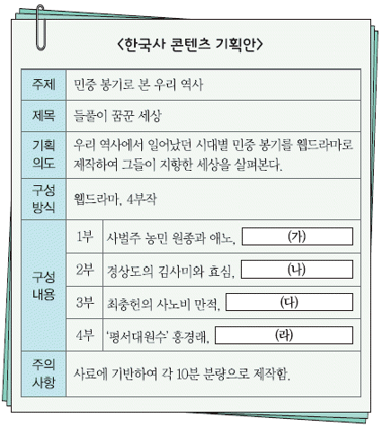
- (가) - 환곡의 폐단과 탐관오리의 횡포에 항거하다
- (나) - 정감록 신앙을 바탕으로 왕조 교체를 외치다
- (다) - 무신정변 이래 격변한 세상에서 신분 해방을 도모하다
- (라) - 특수 행정 구역인 소의 주민에 대한 수찰에 저항하다
(정답률: 50%)
39. (가)에 들어갈 내용으로 적절한 것은? [1점]
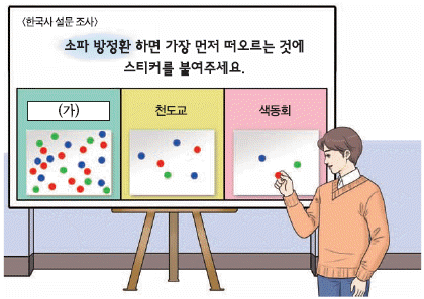
- 서유견문
- 어린이날
- 진단 학회
- 통리기무아문
(정답률: 67%)
40. (가)에 들어갈 사진으로 옳은 것은? [2점]
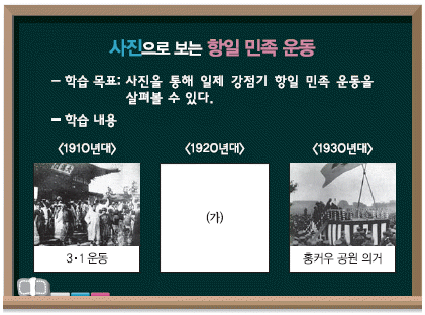
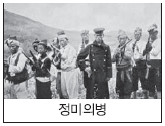
(정답률: 43%)
41. 밑줄 그은 '합의'가 이루어진 배경으로 옳은 것은? [3점]
- 만주 사변이 일어났다.
- 카이로 회담이 개최되었다.
- 태평양 전쟁이 발발하였다.
- 조선 건국 준비 위원회가 결성되었다.
(정답률: 47%)
42. 밑줄 그은 '이 시기'에 일제가 추진한 정책으로 옳은 것은? [3점]
- 회사령을 공포하였다.
- 미곡 공출제를 시행하였다.
- 치안 유지법을 제정하였다.
- 헌병 경찰 제도를 실시하였다.
(정답률: 39%)
43. (가)에 해당하는 지역을 지도에서 옳게 찾은 것은? [2점]
- ㉠
- ㉡
- ㉢
- ㉣
(정답률: 52%)
44. 밑줄 그은 '선거'가 실시된 시기를 연표에서 옳게 고른 것은? [2점]
- (가)
- (나)
- (다)
- (라)
(정답률: 50%)
45. (가)에 들어갈 단체로 옳은 것은? [1점]
- 토월회
- 독립 협회
- 대한 자강회
- 조선어 학회
(정답률: 66%)
46. (가)에 들어갈 민주화 운동으로 옳은 것은? [1점]
- 6·3 시위
- 6월 민주 항쟁
- 2·28 민주 운동
- 5·18 민주화 운동
(정답률: 66%)
47. (가)에 해당하는 인물로 옳은 것은? [2점]
(정답률: 54%)
48. 밑줄 그은 '이 회담' 이후에 있었던 사실로 옳은 것은? [2점]
- 개성 공단이 건설되었다.
- 남북 조절 위원회가 설치되었다.
- 남북한이 유엔에 동시 가입하였다.
- 남북 이산가족 상봉이 최초로 성사되었다.
(정답률: 37%)
49. (가) 정보 시기에 있었던 사실로 옳은 것은? [2점]
- 새마을 운동을 시작하였다.
- 금융 실명제를 전면 실시하였다.
- G20 정상 회의를 서울에서 개최하였다.
- 미국과 자유 무역 협정(FTA)을 체결하였다.
(정답률: 56%)
50. 밑줄 그은 '대책'으로 옳지 않은 것은? [3점]
- 고려 시대에 구제도감 등의 임시 기구를 설치하였다.
- 고려 시대에 양현고 등을 설치하여 기금을 마련하였다.
- 조선 시대에 구질막, 병막 등의 격리 시설을 운영하였다.
- 조선 시대에 간이벽온방, 신찬벽온방 등을 편찬하여 보급하였다.
(정답률: 35%)